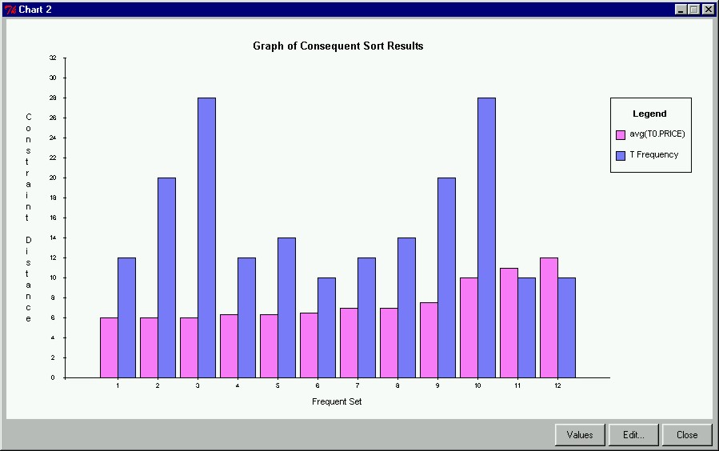

 |
Chart of Sorted Candidate SetsHere we see a chart of our sorted frequent sets. With this feature, we can immediately visually see that set number 10 has both a high frequency and a high price average. The items in the set can be viewed by clicking on the bars representing the set in the chart, or by clicking the "Values" button at the bottom of the Chart window.
|